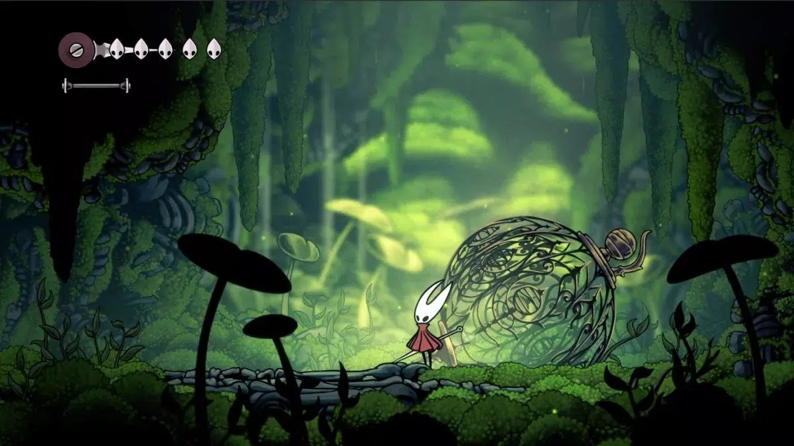

TUDO QUE SABEMOS SOBRE HOLLOW KNIGHT SILKSONG
Hollow Knight Silksong está acontecendo, como nos foi prometido. O jogo foi anunciado anos atrás, mas finalmente recebemos uma atualização como parte do Xbox e Bethesda Game Showcase na E3 2022 deste ano. Vimos um pouco de jogabilidade e surgiram notícias de que poderíamos obter uma versão jogável de Hollow Knight Silksong no próximo ano, mas ainda não há muito o que fazer.
Embora ainda não tenhamos uma data de lançamento concreta, aqui está tudo o que sabemos sobre Hollow Knight Silksong até agora.
A data de lançamento de Hollow Knight Silksong
A Xbox basicamente deu uma janela de lançamento para Hollow Knight Silksong, confirmando que chegará antes de junho de 2023. Isso porque tudo o que foi mostrado durante o Xbox & Bethesda Games Showcase em Junho deste ano está programado para sair nos próximos 12 meses.
Ou seja, como Hollow Knight Silksong estava nessa lista, recebendo até mesmo um trailer durante a apresentação, quer dizer que o jogo está incluso nessa janela de lançamento.
LEIA MAIS
1 - God of War Ragnarok Review
2 – Elden Ring ganha como Jogo do Ano no The Game Awards;
Imagem: TeamCherry
Quais plataformas o jogo será lançado?
Com essa data de lançamento revelada parcialmente pela Microsoft, também recebemos a confirmação de quais plataformas Hollow Knight: Silksong será lançado. Ele estará disponível no PC via Steam, GOG e Humble Store, ao lado também do Nintendo Switch.
Hollow Knight: Silksong também será um lançamento day one para os assinantes do Xbox Game Pass para Xbox Series X, Xbox Series S e Xbox One.
Vale ressaltar que até o momento, Hollow Knight: Silksong não foi confirmado para chegar até o PlayStation 4 ou PlayStation 5, da Sony.